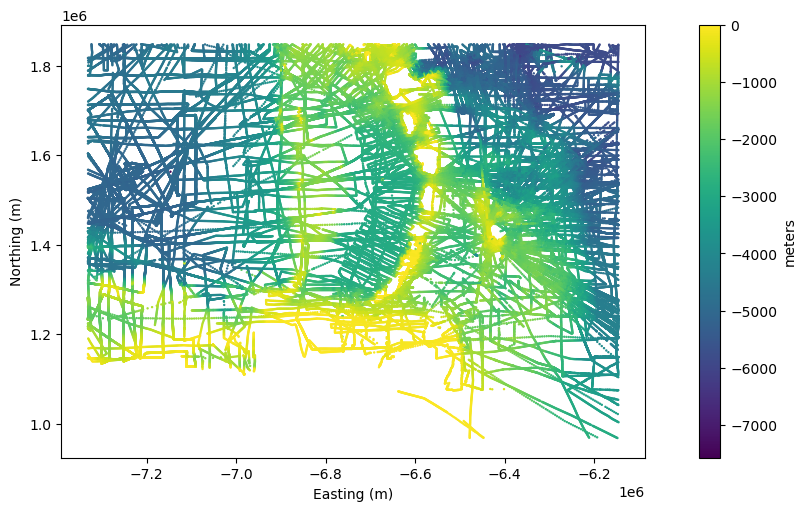
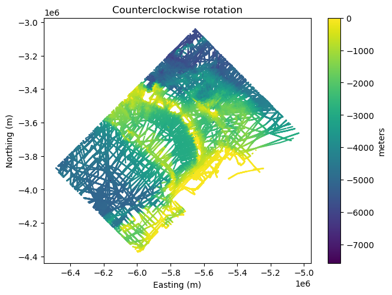
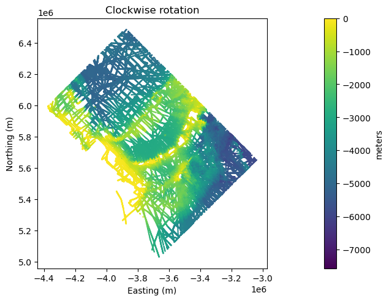
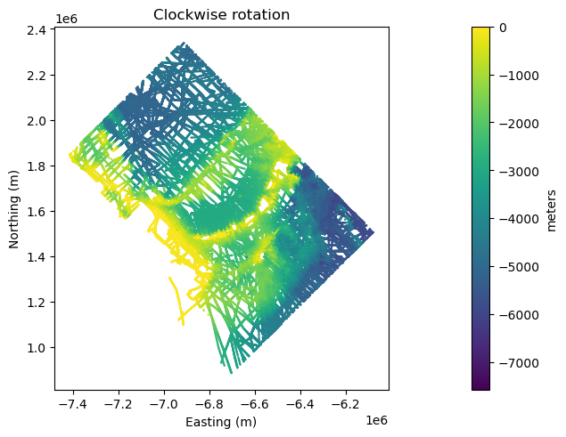

4. Rotate coordinates in 2D#
Let’s say we have some 2D coordinates from a dataset, like easting and northing
in some projection, and we wish to rotate them. This could be useful, for
example, if we’re using those coordinates to build a synthetic dataset. Or
maybe we need to align the coordinates with a certain axis in order to do some
processing. Whatever the use case, bordado.rotate_coordinates will do
the operation for us.
import ensaio
import pyproj
import numpy as np
import matplotlib.pyplot as plt
import pandas as pd
import bordado as bd
To demonstrate, we’ll first load some bathymetry data from the Caribbean using
ensaio.fetch_caribbean_bathymetry:
fname = ensaio.fetch_caribbean_bathymetry(version=2)
data = pd.read_csv(fname)
data
| survey_id | latitude | longitude | bathymetry_m | |
|---|---|---|---|---|
| 0 | 86005311 | 16.09652 | -61.52117 | -187 |
| 1 | 86005311 | 16.09415 | -61.52104 | -177 |
| 2 | 86005311 | 16.09177 | -61.52091 | -185 |
| 3 | 86005311 | 16.08940 | -61.52078 | -188 |
| 4 | 86005311 | 16.08703 | -61.52066 | -192 |
| ... | ... | ... | ... | ... |
| 294316 | JR336 | 15.28529 | -57.01258 | -5276 |
| 294317 | JR336 | 15.28705 | -57.00994 | -5277 |
| 294318 | JR336 | 15.28883 | -57.00732 | -5278 |
| 294319 | JR336 | 15.29057 | -57.00467 | -5277 |
| 294320 | JR336 | 15.29234 | -57.00203 | -5276 |
294321 rows × 4 columns
The data are all in geographic longitude and latitude coordinates. We’ll
first project them to Cartesian coordinates using pyproj since rotating
curvilinear geographic coordinates doesn’t make much sense:
projection = pyproj.Proj(proj="merc", lat_ts=data.latitude.mean())
coordinates = projection(data.longitude, data.latitude)
Now we can plot the data using matplotlib:
plt.figure(figsize=(8, 5), layout="constrained")
plt.scatter(*coordinates, c=data.bathymetry_m, s=0.5)
plt.colorbar(label="meters")
plt.xlabel("Easting (m)")
plt.ylabel("Northing (m)")
plt.axis("scaled")
plt.show()

We can rotate the coordinates counterclockwise by providing a
positive angle to rotate_coordinates:
rotated = bd.rotate_coordinates(coordinates, angle=45)
plt.figure(layout="constrained")
plt.scatter(*rotated, c=data.bathymetry_m, s=0.5)
plt.colorbar(label="meters")
plt.xlabel("Easting (m)")
plt.ylabel("Northing (m)")
plt.title("Counterclockwise rotation")
plt.axis("scaled")
plt.show()

Or clockwise by providing a negative angle:
rotated = bd.rotate_coordinates(coordinates, angle=-45)
plt.figure(layout="constrained")
plt.scatter(*rotated, c=data.bathymetry_m, s=0.5)
plt.colorbar(label="meters")
plt.xlabel("Easting (m)")
plt.ylabel("Northing (m)")
plt.title("Clockwise rotation")
plt.axis("scaled")
plt.show()

Notice that the range of the coordinates changes quite a bit. This is because the rotation is done around the origin of the coordinate system at point (0, 0).
To rotate around the center of the dataset and retain approximately the original
range of the coordinates, we can specify the rotation_center argument:
rotated = bd.rotate_coordinates(
coordinates,
angle=-45,
rotation_center=[np.median(c) for c in coordinates],
)
plt.figure(layout="constrained")
plt.scatter(*rotated, c=data.bathymetry_m, s=0.5)
plt.colorbar(label="meters")
plt.xlabel("Easting (m)")
plt.ylabel("Northing (m)")
plt.title("Clockwise rotation")
plt.axis("scaled")
plt.show()

In this case, the layout of the points looks exactly the same as previously, but the range of the coordinates matches the original dataset more closely.